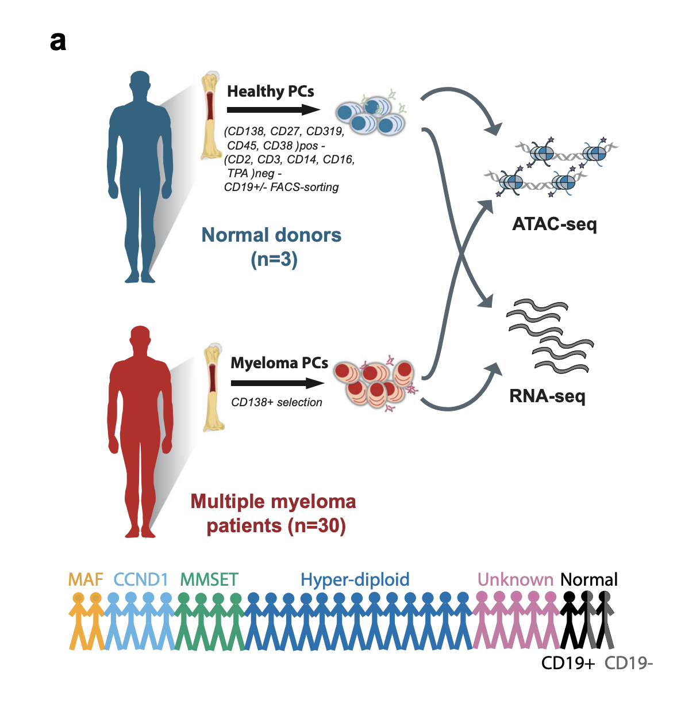
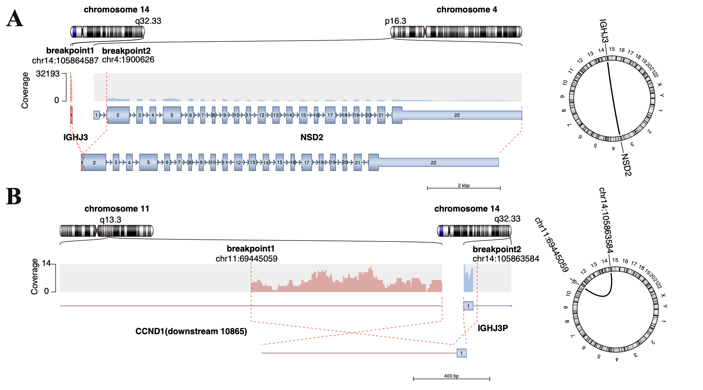
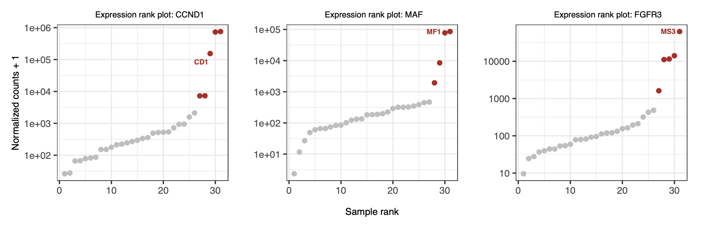
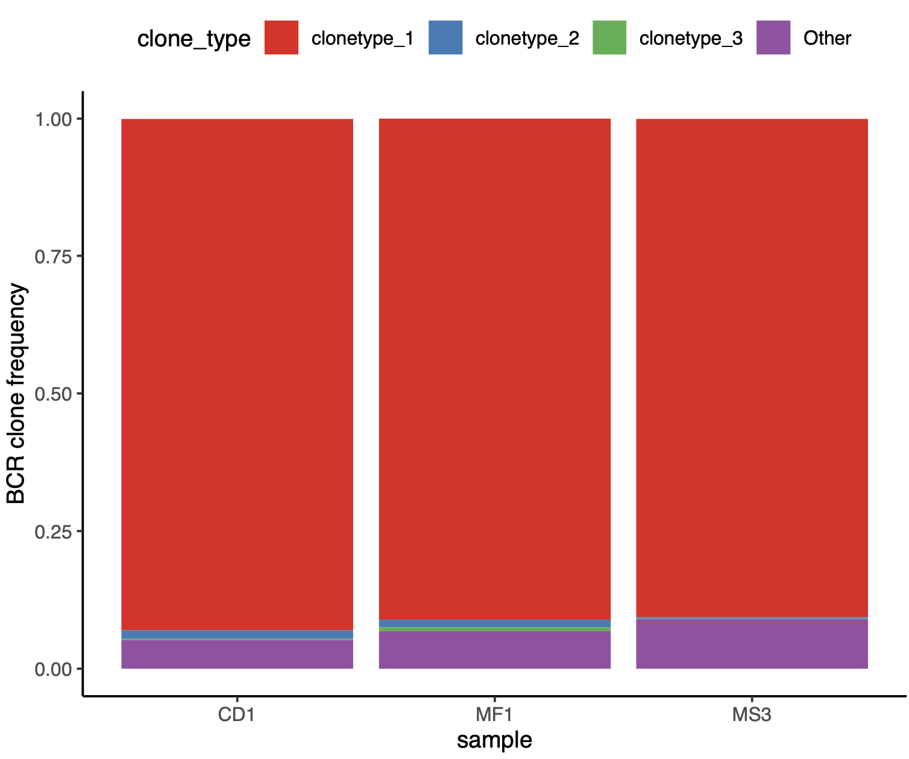

2. Use case II: Fusion genes detection from multiple myeloma patient RNA-seq#
2.1. Background#
RNA sequencing (RNA-seq) is widely used in clinical and translational research to profile gene expression, splicing patterns, fusion transcripts, and other transcriptional abnormalities. In diagnostic settings, common applications include:
Cancer Subtyping: Identifying tumor-specific gene expression signatures, fusion genes (e.g., BCR-ABL1), and aberrant splicing events to guide targeted therapies.
Rare Disease Diagnosis: Detecting dysregulated pathways and aberrant expression in Mendelian disorders where DNA-based tests are inconclusive.
Infectious Disease Characterization: Profiling host-pathogen interactions and pathogen expression in complex infections.
Biomarker Discovery: Validating expression-based biomarkers for disease monitoring and treatment response.
Gene fusions are a major class of oncogenic alterations. They can generate chimeric transcripts, such as BCR::ABL1, or drive overexpression of partner oncogenes, such as IGH::CCND1. The ClinDet RNA workflow supports transcript quantification, fusion detection, immune repertoire analysis, and RNA variant calling. In this example, we reanalyze transcriptomic data from 31 flow-sorted bone marrow plasma cell samples published by Jaime et al. We focus on three multiple myeloma patients, CD1, MS3, and MF1, all reported to harbor rearrangements involving the IGH enhancer and partner genes.
{kind=link}

2.2. Why this case matters#
This case shows how the RNA workflow can be used to combine transcript quantification, fusion detection, and immune repertoire analysis in a clinically relevant hematologic malignancy setting. It is also a useful example of how RNA-seq can reveal both structural events and downstream transcriptional consequences.
2.3. Setup a project folder#
Note
Before starting the analysis, please ensure that you have set up the analysis environment using the build_conda_env.sh script.
Create a folder named project/MM_RNA in your home directory and activate the clindet conda environment.
mkdir -p ~/projects/MM_RNA
cd ~/projects/MM_RNA
conda activate clindet
2.4. Download data and setup a samplesheet.csv#
Download Multiple myeloma RNA-seq data from the SRA database using wget and prepare the sample information file, make sure fastq-dump are in in $PATH (if don’t install it first)
cd ~/projects/MM_RNA
mkdir -p data && cd data
## Methods one multiple myeloma RNA-seq data
wget -q -c -O A26.11 https://sra-pub-run-odp.s3.amazonaws.com/sra/SRR12099713/SRR12099713
wget -q -c -O A27.19 https://sra-pub-run-odp.s3.amazonaws.com/sra/SRR12099714/SRR12099714
wget -q -c -O A28.15 https://sra-pub-run-odp.s3.amazonaws.com/sra/SRR12099715/SRR12099715
fastq-dump --gzip -O ~/projects/MM_RNA/data --split-3 ./A26.11
fastq-dump --gzip -O ~/projects/MM_RNA/data --split-3 ./A27.19
fastq-dump --gzip -O ~/projects/MM_RNA/data --split-3 ./A28.15
Next, create a CSV file named pipe_rna.csv in the ~/projects/MM_RNA directory with the following content:
R1_file_path,R2_file_path,Sample_name,Project
~/projects/MM_RNA/data/A26.11_1.fastq.gz,~/projects/MM_RNA/data/A26.11_2.fastq.gz,MF1
~/projects/MM_RNA/data/A27.19_1.fastq.gz,~/projects/MM_RNA/data/A27.19_2.fastq.gz,MS3
~/projects/MM_RNA/data/A28.15_1.fastq.gz,~/projects/MM_RNA/data/A28.15_2.fastq.gz,CD1
2.5. Prepare the YAML workflow config#
In the current workflow, you no longer need to create a project-specific snake_rna.smk file. Instead, prepare a YAML configuration file and pass it to Snakemake with --configfile.
For this example, create ~/projects/MM_RNA/MM_RNA.yaml and update the following fields:
project.output_dir: output directory for this analysis.project.genome_version: reference genome version, such asb37.project.recal_BQSR: whether to run BQSR.project.vcf2maf: VCF-to-MAF mode.project.sample_sheet: absolute path to the RNA sample sheet CSV file.run_params.stages: RNA analysis stages to run.run_params.rna_caller_list: RNA caller preset used for this analysis.
Note
project:
output_dir: '~/projects/MM_RNA'
genome_version: 'b37'
recal_BQSR: False
vcf2maf: 'raw'
sample_sheet: '~/projects/MM_RNA/pipe_rna.csv'
run_params:
stages:
- salmon
- RSEM
- kallisto
- arriba
- trust4
rna_caller_list:
- default
2.6. Configuration rationale#
This configuration is designed for an RNA-seq case where both expression quantification and biologically interpretable structural readouts are important. The selected stages retain three quantification methods, salmon, RSEM, and kallisto, while also enabling arriba for fusion detection and trust4 for immune repertoire analysis. The default RNA caller preset is used here as a balanced starting point for a general multiple myeloma RNA workflow.
2.7. Run ClinDet#
There is two way you can run ClinDet
run on a local server
submit to HPC through slurm
2.7.1. Run on local node#
nohup snakemake -c 20 --config run_type=rna \
--configfile ~/projects/MM_RNA/MM_RNA.yaml \
--rerun-triggers mtime --benchmark-extended \
--use-singularity --singularity-args "--bind /your/home/path:/your/home/path" \
--latency-wait 300 --use-conda --conda-frontend conda -k >> ~/projects/MM_RNA/MM_RNA.out &
2.7.2. Submit to HPC use slurm#
We provide a Slurm config.yaml file under the clindet/workflow/config_slurm folder.
nohup snakemake -c 20 --config run_type=rna \
--configfile ~/projects/MM_RNA/MM_RNA.yaml \
--profile workflow/config_slurm \
--rerun-triggers mtime --benchmark-extended \
--use-singularity --singularity-args "--bind /your/home/path:/your/home/path" \
--latency-wait 300 --use-conda --conda-frontend conda -k >> ~/projects/MM_RNA/MM_RNA.out &
2.8. Results#
After successful execution, you will see the following directory structure. The fusion folder contains the fusion gene detection results, and the summary folder contains the gene expression quantification results.
2.8.1. Overview of outputs#
~/projects/MM_RNA/b37/results
├── fusion # Fusion Gene Detection Results
├── mapped # STAR mapping results
│ └── STAR
├── mut # RNA Mutation Detection Results
│ ├── dedup
│ ├── maf # annotated MAF file
│ ├── STAR
│ └── vcf
├── IG # Immune repertoire reconstruction results
│ └── TRUST4
│
└── summary # Results of Gene Expression Quantification
├── kallisto
├── RSEM
└── salmon
2.8.2. What to expect#
For this case, the most informative outputs are the arriba fusion calls, the expression quantification results in the summary directory, and the TRUST4 immune repertoire outputs. Successful completion should allow readers to inspect whether IGH-associated rearrangements are detectable at the transcript level and whether partner-gene overexpression is consistent with the published biology.
2.9. Common pitfalls#
sample_sheetshould be an absolute path and must point to files visible inside the Singularity bind mount.genome_versionin the YAML file must match the RNA reference resources configured in the globalconfig.yaml.If
arribais enabled, the alignment and fusion resources must be available for the selected reference build.If
trust4is enabled, users should expect additional runtime and should verify that the resulting immune repertoire files are produced before interpreting clonality.
2.9.1. arriba fusion genes#
Within the gene fusion detection analysis, structural variants were identified in patients CD1 (IGH::CCND1) and MS3 (IGH::NSD2). In contrast, no detectable fusion transcript was found in patient MF1. However, all three patients exhibited aberrantly high expression levels of the corresponding partner genes. We hypothesize that the structural variation breakpoint in the IGH locus of patient MF1 may reside upstream of the MAF gene, possibly in a non-coding regulatory region, allowing enhancer-driven overexpression without producing a fusion transcript. IGH fusion genes circos plot (see below):
{kind=link}

2.9.2. Aberrant expression of partner genes#
Additionally, if you wish to study gene expression levels, you can download the data for all samples from the original publication and perform quantification. Subsequently, use the Outliner package to analyze genes with aberrant expression within the patient cohort. In this example, we will not include this analysis, but interested readers are encouraged to download the data and explore it on their own, The figure below shows the expected analysis results.
{kind=link}

2.9.3. immune repertoire analysis#
Furthermore, immune repertoire profiling of the three samples revealed that more than 95% of the immunoglobulin sequences originated from a single clone. This finding is consistent with the prevailing hypothesis that multiple myeloma arises from a clonal expansion of a single progenitor B cell.
{kind=link}
